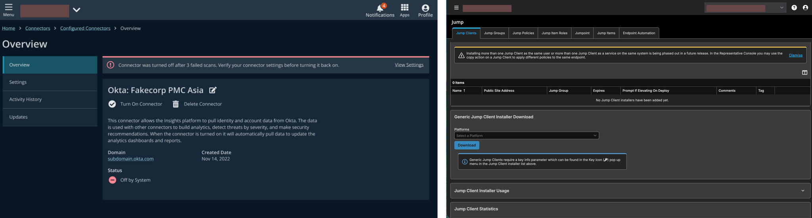

From Scattered Files to Governed Infrastructure. 🛡️
An enterprise cybersecurity company selling to every US cabinet-level agency had a design system that was a shared file with no governance. Products looked different, broke in dark mode, and failed the accessibility audits required for federal procurement.
I rebuilt it.
The legacy library had 100+ drifting components, no token layer, and completely inconsistent dark mode and accessibility standards. Because engineers couldn't rely on the system, detach rates were hovering around 40%, leading to massive engineering rework and custom CSS loops.

Transitioned from hardcoded hex values to a Primitive → Semantic → Component variable structure. This allowed framework abstraction, so updating a primary button color seamlessly pushed updates to both the Angular and React frontends without touching the components directly.
Defined formal entry gates for adoption. Clarified component definitions (e.g., Tiles vs. Cards) so designers stopped creating divergent patterns due to naming confusion. Created a submission-and-review protocol mapped to Jira.
Unified product guidance, exact design tokens, and live code demos into a single versioned framework that engineers actually trusted and read.
Why it mattered: Federal contracts require stringent Section 508 and VPAT accessibility compliance. By strictly enforcing WCAG AA+ contrast at the token layer, we eliminated disqualification risk during procurement reviews. Furthermore, we recovered hundreds of engineering hours by slashing component detaches from 40% to <1%.